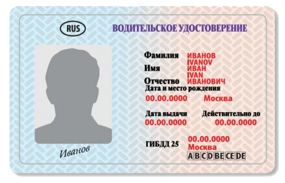

Что такое - обучение экстерном ?
Экстерна́т (от лат. externus — посторонний) — это форма аттестации, которая предполагает самостоятельное изучение общеобразовательных программ с промежуточной и государственной (итоговой) аттестациями в образовательном учреждении, имеющем государственную аккредитацию. Суть экстерната состоит в возможности получить образование, не посещая учебное заведение ежедневно. Двухмесячная программа может быть пройдена за один месяц. Преимущество экстерната состоит в том, что он даёт возможность реализации индивидуальной образовательной траектории, позволяет в более свободном режиме посещать учебное заведение, совмещать учёбу в автошколе и работу или обучение в другом учебном заведении и пр. Обучение в экстернате может быть полностью самостоятельным, учащийся сдаёт только экзамены. Главный принцип экстерната — освободить учеников от ежедневных многочасовых занятий в учебном заведении, сэкономив таким образом время, но при этом дать полноценное образование. Система образования экстерном устроена так, что за минимальный период времени обучающийся получает максимальное количество информации. Мнение о том, что получаемые знания поверхностны, ошибочно. Обучающийся осваивает программу самостоятельно, а степень усвоения контролирует преподаватель. Для этого обучающийся сдаёт зачёты и экзамены и на основании положительных результатов получает соответствующий документ об окончании. .
Документы для экзаменов в ГИБДД:
- заявление установленного образца (оформляется у нас)
- паспорт или иной документ, удостоверяющий личность, с отметкой органа внутренних дело регистрации по месту жительства (пребывания), а при отсутствии указанной отметки - свидетельство о регистрации по месту временного пребывания
- медицинскую справку установленного образца о годности к управлению соответствующими категориями транспортных средств с отметками нарколога и психиатра, а также копию справки
- три фотокарточки размером 3 x 4 см
- квитанцию об уплате госпошлины за водительское удостоверение 800р.
- Водительская карточка (оформляется у нас)
- Свидетельство об окончании обучения (выдается у нас)
- Первый
- - на закрытой для движения других транспортных средств площадке или автодроме
- Параллельная парковка
- Змейка
- Разворот в 2 приема
- Въезд на эстакаду
- Заезд в бокс задним ходом
- Второй
- - на испытательном маршруте в условиях реального дорожного движения
Как и обычный экзамен, экстерн состоит из двух частей: теоретической и практической.
Теорию можете изучать самостоятельно, получив все необходимые видеоуроки по теории и практике в электронном виде у нас бесплатно (объем 8 Гб). Во-первых, у вас уйдет на это гораздо меньше времени, чем при посещении занятий в классе. Ну а во-вторых, вы сэкономите деньги, что не маловажно. Параллельно с этим мы с вами будем заниматься вождением и готовить документы на экзамен. Экзамены сдаются в следующей последовательности: сначала теоретический, затем - практический. Кандидат в водители, не сдавший теоретический экзамен, к практическому экзамену не допускается. Повторный экзамен, как теоретический, так и практический, назначается не ранее чем через 7 дней со дня проведения предыдущего. Положительная оценка, полученная на теоретическом экзамене, считается действительной в течение 3 месяцев.
На экзамене способ проверки теоретической части – прост. В течение 20 минут вы отвечаете на 20 вопросов. Допускается сделать 2 ошибки или меньше, и тогда экзамен сдан. Если ошибок больше – вы провалились, и до практической части будете не допущены.
Практический экзамен по вождению на категорию «В» принимается в два этапа:
Вторая часть практики это выезд в город. Здесь от вас потребуется не только умение правильно управлять автомобилем, но и знание Правил Дорожного Движения и должное им применение. Практический экзамен на автодроме и в городе оценивается по Таблице штрафных баллов.
В общем, если посчитать затраты времени, денег и нервов, то учиться вождению экстерном и быстрее, и выгоднее и проще. Если вы уверены в себе и в своих знаниях, то сдать экзамен экстерном с нашей помощью будет для вас реальностью. И вы непременно получите ваше водительское удостоверение!
